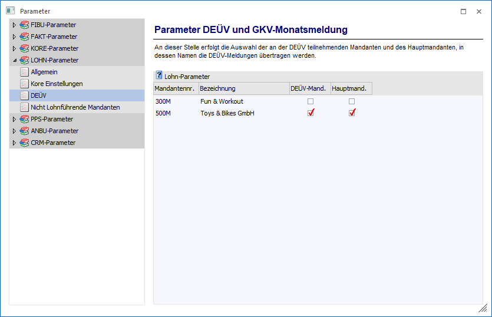

Hier legen Sie fest, für welchen Mandanten Sie eine DEÜV durchführen möchten.

Ø DEÜV-Mandant
In der Spalte DEÜV-Mandant bestimmen Sie die Auswahl der Mandanten, die bei einer DEÜV-Ausgabe automatisch auf auszugebende Meldungen geprüft werden und bei Erkennen von Meldetatbeständen, diese automatisch ausgegeben werden. Hier können mehrere Mandanten selektiert werden.
Ø Hauptmandant
In der Spalte Hauptmandant legen Sie fest, in welchem Mandanten Sie die DEÜV-Ausgabe durchführen möchten. In diesem Mandanten ist das Stammdatenprogramm zur Einrichtung der DEÜV, der DEÜV-Stamm, unter dem Menüpunkt
1 Stammdaten
1 Mandantenstammdaten
zu finden und automatisch freigeschaltet. Alle melderelevanten Daten aus allen Mandanten, die Sie in der Spalte DEÜV-Mandant festgelegt haben, werden bei einer DEÜV-Ausgabe, die Sie in dem Hauptmandanten starten, gesammelt ausgegeben.